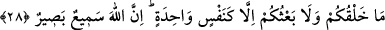
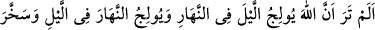
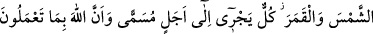
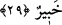

Her ne kadar ona sâhip olmak padişahlık gibi görünse de,
İyice baktığında aslının dilencilik olduğunu anlarsın.
Allah’tan tevfîk niyaz ederiz.
28. (İnsanlar!) Sizin yaratılmanız ve diriltilmeniz, ancak tek bir kişinin
yaratılması ve diriltilmesi gibidir. Unutulmasın ki, Allah her şeyi işiten ve görendir.
Ey İnsanlar! Çok oluşunuzla birlikte “sizin yaratılmanız ve diriltilmeniz” yeniden
canlandırılıp kabirlerden çıkarılmanız, kolaylık bakımından, “ancak tek bir kişinin
yaratılması ve diriltilmesi gibidir.” Çünkü O’nu hiçbir iş başka bir işi yapmaktan
alıkoyamaz. İster az olsunlar, ister çok, herkesin var edilmesi için irade ve kudretinin
onlara yönelmesi kâfîdir. “Ol!” der, onlar da derhal oluverirler.
Mukâtil ve Katâde der ki: “Kureyş müşrikleri: “Allah bizi nutfe, alaka, bir çiğnem et
ve etten safha safha yarattı. Böyle olunca bizi bir an içinde yeni baştan nasıl var
edecek” dediler. Bunun üzerine bu âyet nâzil oldu.
Kâşifî der ki: Allah Teâlâ’nın eşyâyı yaratırken herhangi bir âlet ve edevâta ihtiyacı
yoktur. İsrâfîl’e: “Allâh’ın dâveti ile mezarlarınızdan kalkınız” demesi kâfidir. Bütün
yaratılmışlar mezarlarından çıkarlar.”
Bunun dünyâda misali şudur: Bir padişah sefere çıkacak zaman tellallara nida
ettirdiğinde bir anda toplanıp bir araya gelir.
“Unutulmasın ki, Allah” işitilen her şeyi “işiten” –yaratma ve yeniden diriltilmeyi
inkâr ve imkansız görmeye dâir onların söyledikleri sözler de buna dâhildir– “ve”
görülecek her şeyi “görendir.” Bazı şeyleri bilmesi diğer başka şeyleri bilmesine mâni
değildir. Yaratması ve diriltmesi de böyledir.
Bazıları da şöyle demiştir: O, hayatta olanların da, ölülerin de durumlarını görendir.
Böyle kudret sâhibi bir varlık için acziyet söz konusu olmaz.
Âcizlik ve noksanlık bulunmayan bir kuvveti kimseye vermedin.
Böyle bir kuvvete ancak Sen sâhipsin.
29. Bilmez misin ki Allah, geceyi gündüze ve gündüzü geceye katmaktadır.